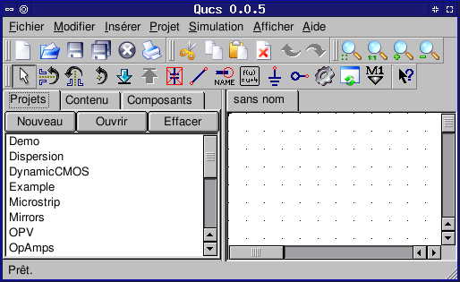
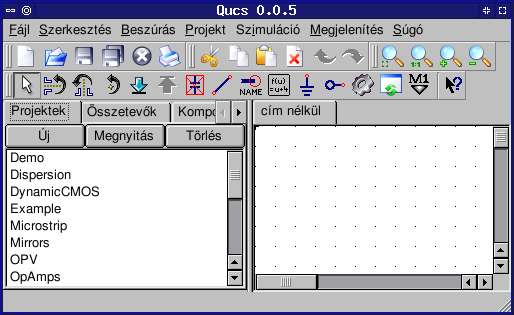
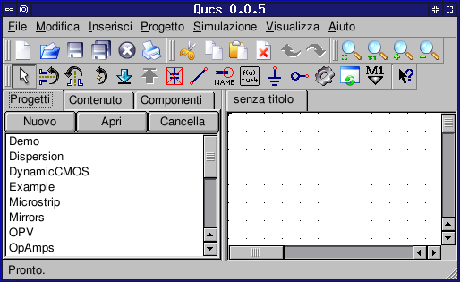
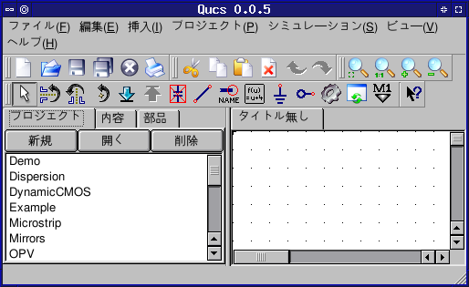
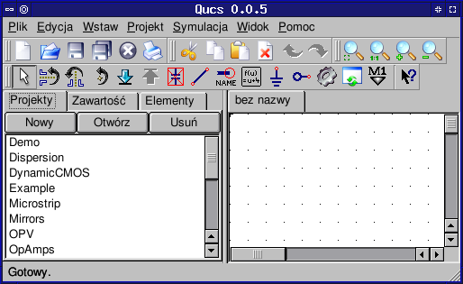
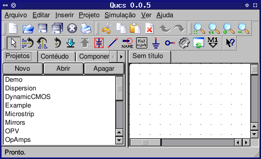
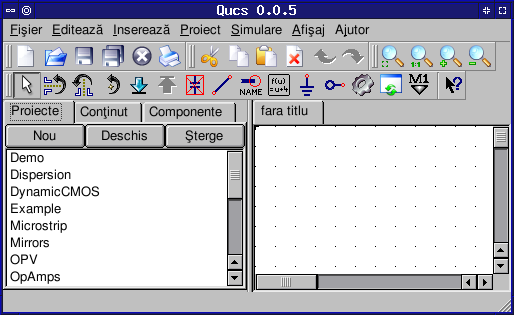
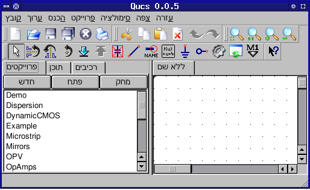
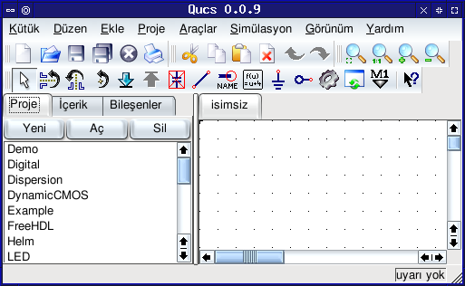

Screenshots of translations
The below screenshots visualise how the Qucs GUI changes its appearance with different languages selected.German. |
Spanish. |
|  French. |
 Hungarian. |
|  Italian. |
 Japanese. |
|  Polish. |
 Portuguese. |
|  Romanian. |
 Hebrew. |
 Turkish. |